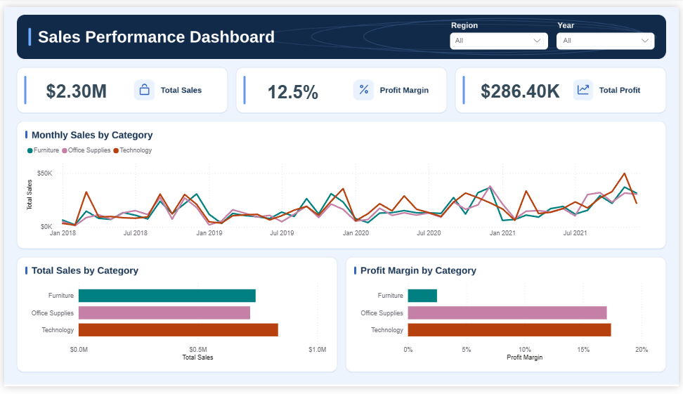
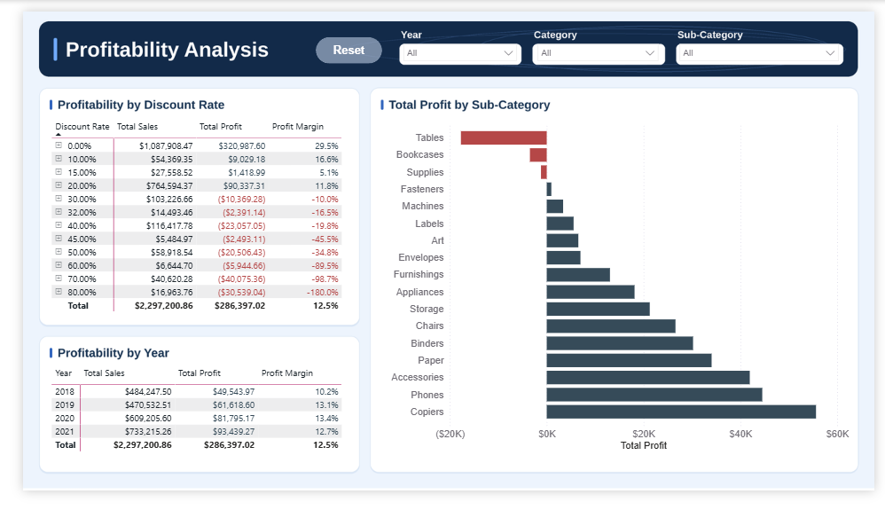

Retail analytics · MySQL · Power BI
Retail Sales & Profitability
Sales in the South region grew by $29,295.63 from 2020 to 2021, while profit fell by $8,853.90. I used MySQL and Power BI to trace where that decline was concentrated.
- Total sales · 2018–2021
- $2.30M
- Total profit · 2018–2021
- $286.40K
- Profit margin · 2018–2021
- 12.5%
Data and workflow
The Tableau Sample Superstore dataset covers 2018–2021. It contains 9,994 order lines with order dates, regions, product categories, sales, profit, and discount rates.
Prepare the data
I staged the source data in MySQL, parsed the order dates, standardized field names, and checked the row count before exporting to CSV.
Investigate the decline
I compared 2020 and 2021 using SQL, then narrowed the analysis from region to category, subcategory, and discount rate.
Build the report
I used DAX to calculate profit margin and highlight losses. The two Power BI pages let readers explore trends and investigate profitability.
See the MySQL query for the regional comparison
SELECT
region,
ROUND(SUM(CASE WHEN sales_year = 2021 THEN sales ELSE -sales END), 2) AS sales_change,
ROUND(SUM(CASE WHEN sales_year = 2021 THEN profit ELSE -profit END), 2) AS profit_change
FROM (
SELECT
`Region` AS region,
YEAR(STR_TO_DATE(TRIM(`Order Date`), '%d/%m/%Y')) AS sales_year,
`Sales` AS sales,
`Profit` AS profit
FROM superstore_sales.orders_staging
) AS order_lines
WHERE sales_year IN (2020, 2021)
GROUP BY region
ORDER BY sales_change DESC;Tech stack
MySQL
Prepared the order-line export and analyzed sales and profit by region, category, and discount rate.
Power BI Desktop
Built the dashboard pages, slicers, and interactive visuals.
DAX
Calculated profit margin and applied conditional colors to losses.
What the analysis found
South Technology recorded the largest category profit decline
Technology sales in the South rose by $7,805.77 between 2020 and 2021, while profit fell by $5,578.94.
Machines drove the decline within South Technology
Machine profit fell by $8,215.72, from $4,308.11 in 2020 to a $3,907.61 loss in 2021. Gains in Copiers and Phones offset part of the decline.
Four heavily discounted order lines accounted for the loss
South Machines order lines at a 50% discount lost $4,147.60 in 2021, with a −43.82% margin. Review the product costs and pricing on those four lines before changing discount policy.
Dashboard previews



